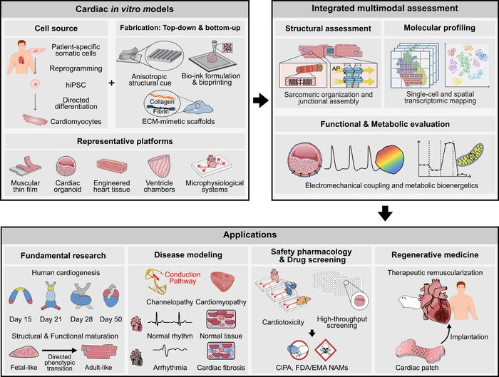

Advanced in vitro cardiac models for drug evaluation: integration of organoids, engineered tissues, and microphysiological systems
A review of cardiac organoids, engineered tissues, and microphysiological systems, with a focus on integrated structural, functional, and molecular assessment for preclinical drug evaluation.